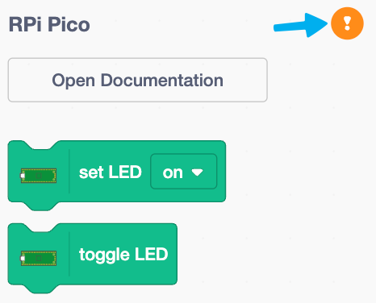

Raspberry PI Pico
The Raspberry Pi Pico series is a range of tiny, fast, and versatile boards built using RP2040, the flagship microcontroller chip designed by Raspberry Pi in the UK.
Meet the Raspberry PI Pico
Detailed view Raspberry Pi Pico product page, buy address: link (https://thepihut.com/products/raspberry-pi-pico).

The Raspberry PI Pico Extension
The Raspberry PI Pico extension is an extension module developed based on Scratch 3.0, which can make Scratch 3.0 have the function of developing the Raspberry PI Pico board.
Use the extension to perform real-time programming or offline programming of the Raspberry PI Pico board (not yet open), and you can see the running effect in time and interact with the computer during real-time programming. After real-time programming is completed, it can be directly downloaded to the Raspberry PI Pico board to run offline. Offline operation can not be connected to a computer, but it also loses the ability to interact with the computer.
Firmware
The Raspberry PI Pico Board is required to download the latest custom firmware (kaluma-rp2-pico-1.1.0-beta.1.uf2).
Drag and drop to install firmware
After downloading the firmware, get the Raspberry PI Pico board ready (without connecting the USB port to the computer), and then install the firmware by following these steps:
- Press and hold the BOOTSEL button on the back of the Raspberry PI Pico board, then plug the Raspberry PI Pico board into the USB port of the PC, and release the BOOTSEL button.
- The Raspberry PI Pico board will be recognized as a mass storage device.
- Put the downloaded firmware file (UF2 file) on the RPI-RP2 volume.
- The Raspberry PI Pico board will restart automatically and programming will begin.

Next you can use the Raspberry PI Pico extension to program the Raspberry PI Pico board.
Connecting the Raspberry PI Pico
| Click the exclamation mark to start the connection | Select Raspberry Pi Pico board |
|---|---|
|  |  |
Now start having fun coding!
Programming
Pins